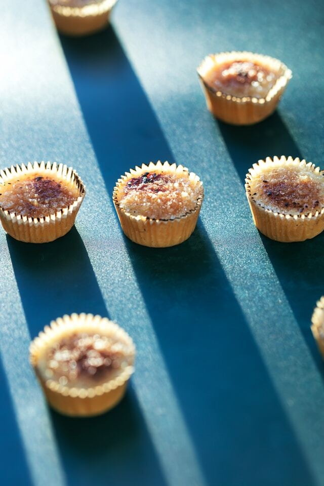

Welcome to a show about how to change for the better the intertwined systems we all live within
Politics, culture, economics, technology, food, education... Each episode of Ungerrymander America explores a different system. Through open and good faith conversation, together we can build a better system and create better conditions for human flourishing today, and far into the future.
Photo from "Everyone should be a part-time farmer" with guest Sam Wright
Ungerrymander America is hosted by Zane Gustafson. He is the author of Polemic for Democracy, a book about constitutional reform. He is based in Seattle and has expertise in the energy transition and democracy reform.
Your support is greatly appreciated!
Every episode is recorded in person!
According to the author of popular zine "AI MUST DIE", after some point AI is really only useful for crime
America's macroeconomic situation is a product of decades of mismanagement, according to a former commodities trader

Challenging the status quo is difficult, and I talk with a candidate making a case for moving to the left in Washington State